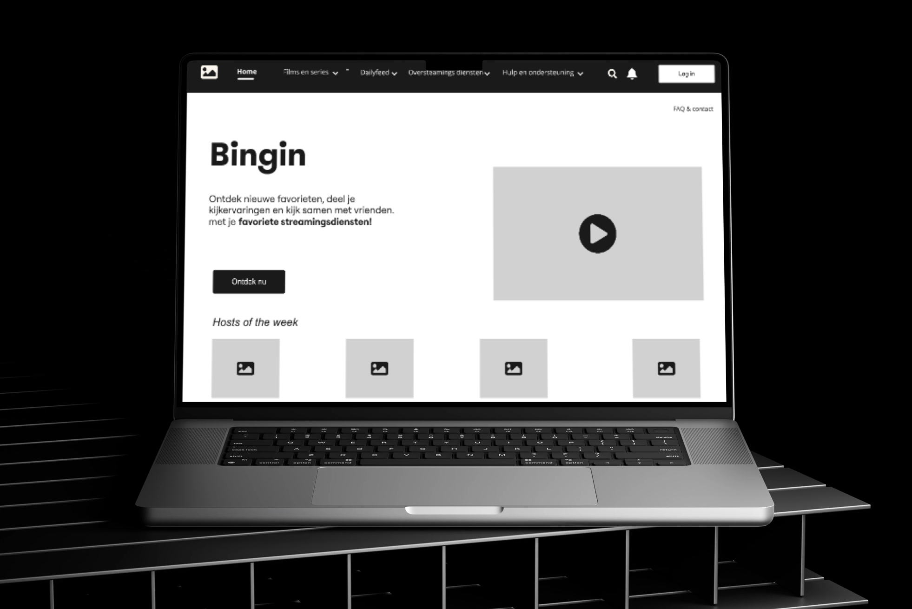
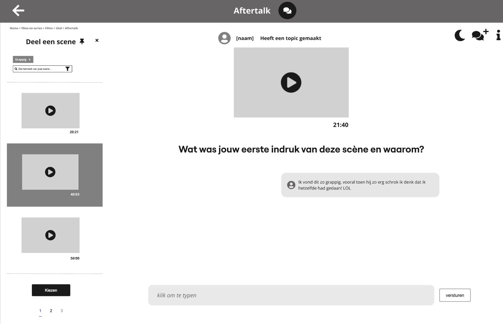
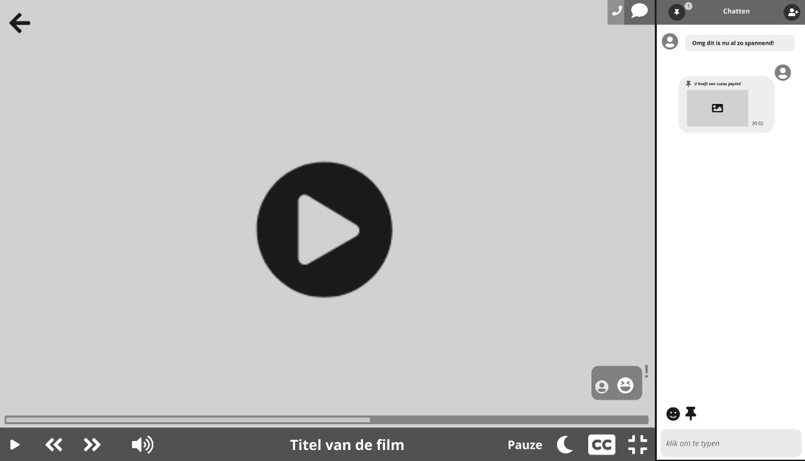

Bingin
For Bingin, I developed a high-fi website that helps users enjoy streaming videos to the fullest. I created an extensive information architecture for this project.
About the Assignment
The core functionality includes finding video content from various providers such as Netflix, Prime Video, HBO, and Disney+, and watching movies and series together. My deliverables included annotated wireframes, a flowchart, a user journey with new functionality, and a sitemap with a homepage design.
Problem Statement
Bingin’ aims to support users in finding and watching streaming video content together without playing videos themselves. The challenge was to design an intuitive and comprehensive user interface offering diverse search strategies, filter and sorting options, as well as a user-friendly co-watching experience.
My Role
- UI Design
- Concept Development
- Interface Design
- Functional Design
- Brand Identity
- Sub-style
- Target Audience Focus
- User Experience
Extra Feature
One of the key additions to Bingin is the ability to pin scenes while watching a movie or series. Users can save these scenes to discuss them with friends later. After watching, users can go to a shared chat where the pinned scenes can be retrieved and placed in the group app. A question appears prominently at the top of the screen, encouraging everyone to join the discussion and share their opinions. Additionally, Bingin offers the ability to play a quiz or other mini-games within the chat. The chat, including all conversations and activities, can also be saved. This new functionality enhances engagement and the social aspect of co-watching, aligning with user needs.
Demo
View the process and all screens
View on MiroProject Images


